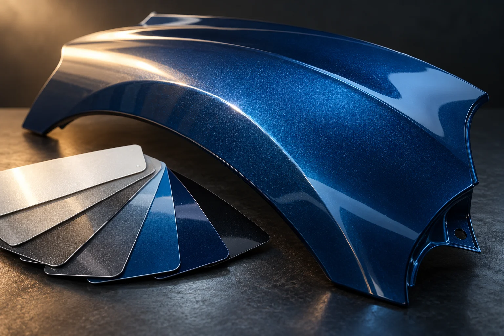

Иллюстрация — пример повреждения кузова, не работа мастерской «Наст».
Кузовной ремонт и покраска автомобиля
«Наст» — мастерская кузовного ремонта на улице Скрябина, 8 в Казани. Кузовной ремонт, покраска автомобиля и ремонт пластиковых бамперов — подтверждённые направления работы. Позвоните, чтобы описать повреждение, уточнить возможность ремонта вашей детали и согласовать визит. Стоимость и объём работ следует обсуждать после оценки состояния автомобиля.
Если после удара или контакта с препятствием изменились форма детали, зазоры или внешний вид кузова, опишите это при звонке. Возможность восстановления и необходимый объём вмешательства уточняются по конкретному повреждению; по одному внешнему следу их определить нельзя.
02
Покраска автомобиля
При обращении по поводу окраски назовите повреждённые элементы и расскажите, что произошло с покрытием: появились царапины, сколы или следы прежнего ремонта. Обсудите подготовку поверхности, подбор оттенка и границы работ. Конкретный способ окраски нужно согласовать с мастерской.
03
Ремонт пластиковых бамперов
Трещина, деформация или повреждённое крепление требуют оценки состояния бампера. Сообщите, остались ли отделившиеся фрагменты и есть ли повреждения рядом. Возможность ремонта пластика, необходимость окраски и целесообразность восстановления уточните до принятия решения о работах.

Иллюстрация — оттенок и покрытие детали, не работа мастерской «Наст».
НАСТ · КАЗАНЬ
От повреждения — к понятному плану ремонта
Внешне похожие повреждения могут требовать разного подхода. До согласования работ полезно обсудить состояние детали, сохранность покрытия и желаемый результат. Уточните, что входит в оценку, какие работы необходимы и потребуется ли дополнительное согласование после осмотра. Иллюстрации на странице поясняют тему кузовного ремонта и окраски; это не фотографии помещения или выполненных работ мастерской.
Что рассказать о повреждении
Для первого разговора выберите главное: какая часть автомобиля повреждена и что изменилось после происшествия. Эти ориентиры помогут сформулировать задачу, но не заменят осмотр.
Вмятина или потёртость на кузове: назовите деталь, примерный размер следа и состояние краски.
Царапины или сколы покрытия: уточните, затронут ли один элемент или несколько соседних участков.
Трещина на бампере: расскажите о креплениях, недостающих фрагментах и видимой деформации.
Предыдущий ремонт: предупредите, если элемент уже красили, восстанавливали или меняли.
От чего зависит оценка ремонта
Общие факторы стоимости — площадь и глубина повреждения, состояние основания и покрытия, доступ к участку, необходимость снятия деталей и объём подготовки перед окраской. Для пластикового бампера также важно состояние креплений и сохранность фрагментов.
Попросите пояснить состав предварительной оценки: какие операции включены, какие материалы потребуются и при каких обстоятельствах сумма может измениться. Уточните порядок согласования дополнительных работ. Тарифы и сроки на странице не указаны: их нужно обсудить применительно к вашему автомобилю.
Перед звонком и поездкой
Подготовьте марку, модель и год автомобиля, перечислите повреждённые детали. Если делаете снимки для последующего обсуждения, пригодятся общий вид и несколько крупных планов при ровном освещении. Уточните по телефону, можно ли и каким способом передать фотографии.
Не пытайтесь разбирать повреждённый участок ради предварительной оценки. Перед поездкой согласуйте время, возможность осмотра и ориентир для подъезда по адресу: Казань, улица Скрябина, 8. Если повреждение мешает безопасному движению, отдельно решите вопрос доставки автомобиля.
Как обратиться в мастерскую
01
Позвоните
Назовите автомобиль, повреждённую деталь и основные обстоятельства, чтобы обсудить вашу задачу.
02
Согласуйте осмотр
Уточните удобное время, порядок оценки и вопросы, которые стоит решить перед поездкой.
03
Обсудите объём работ
После оценки согласуйте необходимые операции, стоимость и сроки до начала ремонта автомобиля.